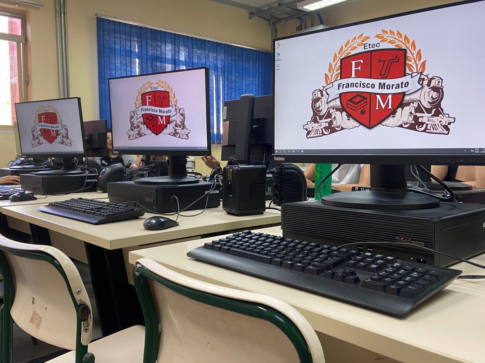

Você sabia?
Eu que fiz o atual logo da ETEC de Francisco Morato (onde estudei)!
A ETEC de Francisco Morato tinha completado 10 anos na época e, para comemorar, abriram um concurso entre os alunos para criarem a nova logo da escola e a minha foi a escolhida.

Laboratório de Informática da ETEC de Francisco Morato